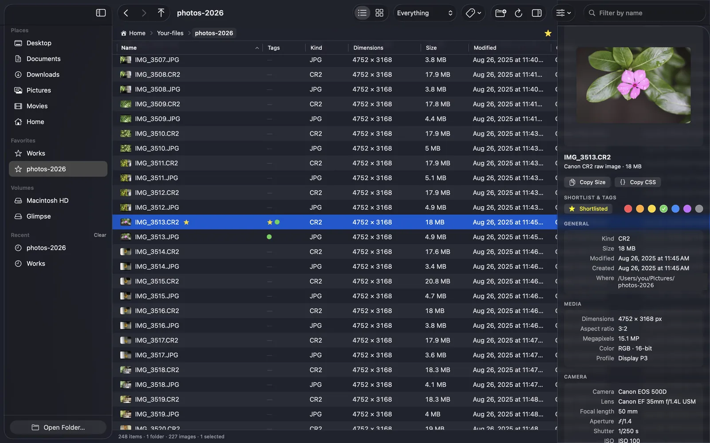
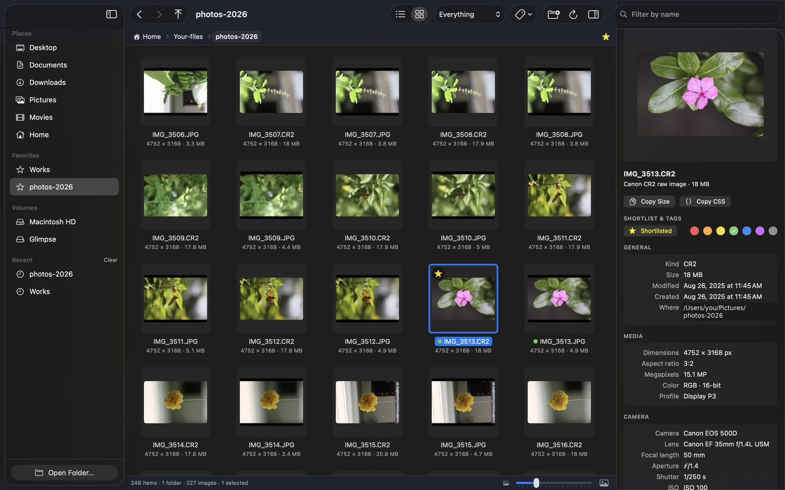
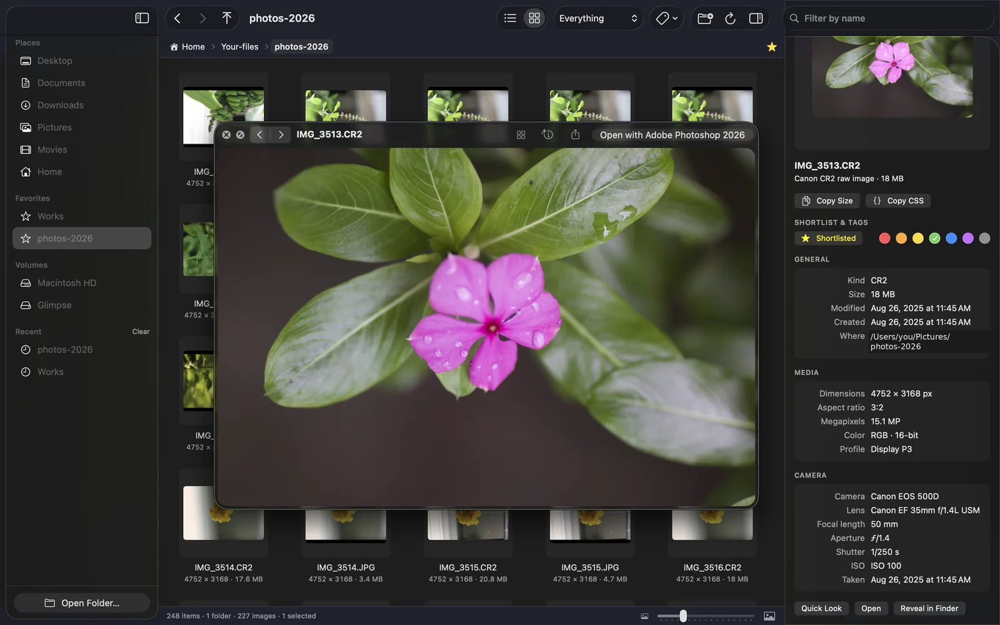
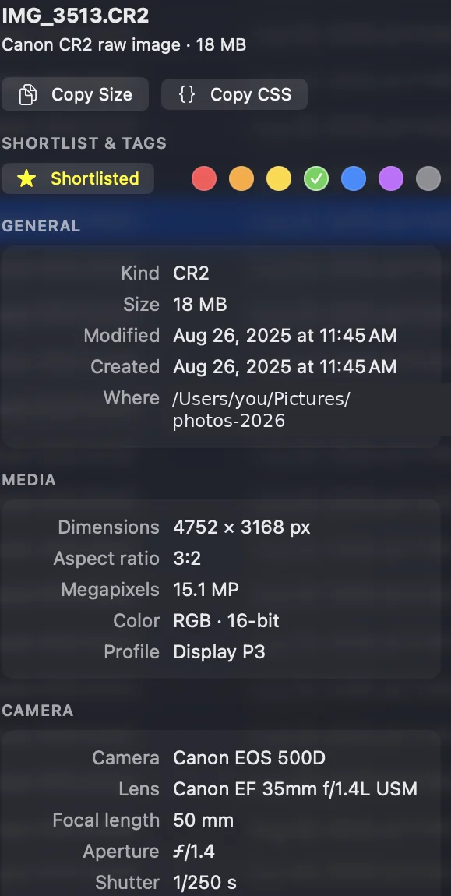

Every pixel dimension, without opening a single file.
Glimpse is a folder browser for Mac that shows the width, height, camera settings and video details of everything inside — the way Finder should have.
Free and open source. Version 1.0.0 · macOS 14 or later · Apple Silicon and Intel · 2 MB

Same folder. One of these answers the question.
Finder knows a file's size and kind. Ask it how big a photo is and it sends you to Get Info, one file at a time, and gives up entirely when a folder mixes JPEGs, RAWs, PSDs and videos.
| Name | Kind | Size | Dimensions |
|---|---|---|---|
| IMG_3513.CR2 | Canon CR2 | 18 MB | — |
| IMG_3513.JPG | JPEG image | 4.9 MB | — |
| hero-banner.psd | Photoshop | 86 MB | — |
| reel-final.mov | QuickTime movie | 412 MB | — |
| Name | Dimensions | Camera | Duration |
|---|---|---|---|
| ★ IMG_3513.CR2 | 4752 × 3168 | Canon EOS 500D | — |
| IMG_3513.JPG | 4752 × 3168 | Canon EOS 500D | — |
| hero-banner.psd | 2880 × 1620 | — | — |
| reel-final.mov | 1080 × 1920 | iPhone 15 Pro | 0:42 · 30 fps · HEVC |
Built for people who look at a lot of images.
Photographers checking a shoot, designers hunting for the 2× export, developers who need the exact size for a CSS rule. Glimpse reads the numbers from the file headers, so nothing is decoded and nothing is slow.
Thumbnails that tell you the size
Switch to the thumbnail view and every picture carries its dimensions and file size underneath. Slide the size control to go from contact sheet to full preview.
- RAW, HEIC, PSD, SVG, PDF and video thumbnails
- Rotation-aware: a portrait photo reads as portrait
- Thumbnails come from the camera's embedded preview, so a folder of 500 RAW files is quick

Space bar. Just like Finder.
Press Space for a full-size Quick Look, use the arrow keys to step through the folder, and the inspector keeps up with the camera data for whatever you're looking at.
- Space Quick Look, ⌘Y too
- Copy Size puts
4752 × 3168on the clipboard; Copy CSS gives youwidth: 4752px; height: 3168px; - Open in your editor, reveal in Finder, or drag the file anywhere

Shortlist your best work
Star the keepers with ⇧⌘L and colour-tag the rest with ⌃1–⌃7. They're real Finder tags, so your picks show up in Finder, Spotlight and every other app — and a toolbar filter shows only the shortlist when it's time to deliver.
- Star and colour dots in the list, the thumbnails and the inspector
- Tags survive renames, moves and copies
- Filter by shortlist, by a colour, or to the untagged leftovers

Manage files without leaving
Copy, paste, move, duplicate, rename, new folder, move to Trash — with Finder's own shortcuts and Finder's own clipboard, so you can copy here and paste there.
- ⌘C ⌘V copy and paste, ⌥⌘V move the copied files here
- ⌘D duplicates as
copy_name.jpg, Return renames - Copy to Folder…, Move to Folder…, and New Folder with Selection
Only the columns you care about
Twenty-three columns, every one sortable. A retoucher shows Camera, Lens and ISO; a web designer shows Width, Height and DPI; a video editor shows Duration, Frame rate and Codec. Glimpse remembers your layout.
Your hands stay on the keyboard.
Nothing leaves your Mac.
Glimpse is a native Swift app with no accounts, no analytics and no network code at all. You can read every line of it.
Free, and staying that way
Glimpse is made by one person in spare evenings. If it saves you a few minutes a day, a coffee keeps the evenings going.
Questions
macOS says it can't verify the developer. What now?
Which files does it understand?
Does it change my files?
Why does it ask for permission to see my Desktop or Documents?
Will it slow down with a big folder?
Where are my settings kept?
~/Library/Preferences/com.fluidbrush.glimpse.plist — view options, column layout, favourite and recent folder paths. Delete that file to reset everything.Can I build it myself?
./build.sh with the Xcode Command Line Tools installed. It produces the app and the DMG; no other dependencies.